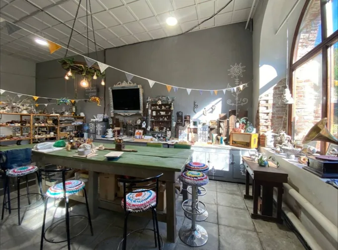
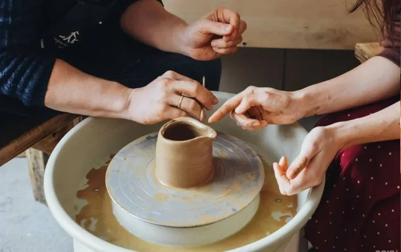
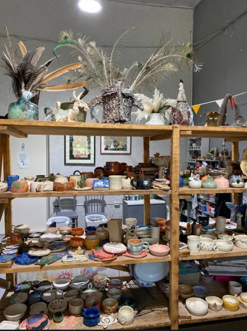
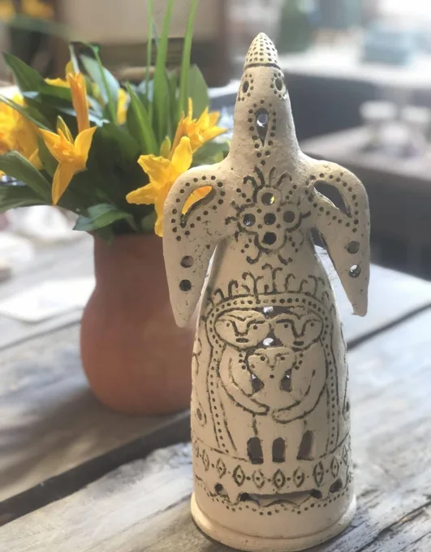
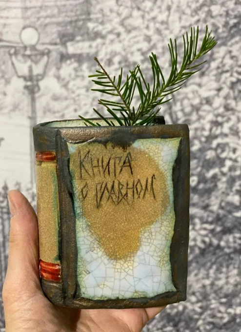
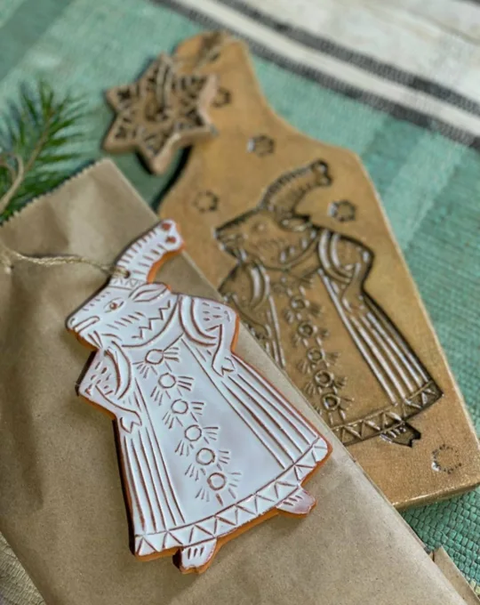
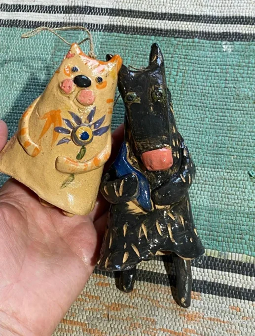
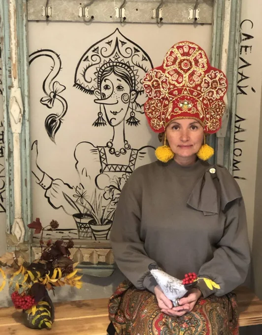

Ремесло из глины
От податливой глины до прочного сосуда — как устроено ремесло и какие вещи выходят из рук гончара.
Гончарный промысел: понятие, назначение и основные особенности
Гончарный промысел — это исторически сложившаяся форма ремесленной деятельности, связанная с изготовлением предметов из глины: посуды, бытовых сосудов, игрушек, декоративных изделий. Результатом этого труда является керамика — изделия из глинистых материалов, прошедшие формование, сушку и обжиг. Понятия «гончарство» и «керамика» соотносятся как деятельность и её результат: гончарство обозначает конкретную ремесленную практику и способы работы с материалом, тогда как керамика охватывает более широкую область изделий из обожжённой глины.
Назначение гончарного промысла исторически определялось практическими нуждами. Керамическая посуда была повседневным предметом в каждом доме: в ней хранили воду, молоко, зерно, готовили и подавали пищу. Помимо утилитарной функции, гончарные изделия постепенно приобретали художественную выразительность — за счёт пропорций, фактуры, цвета и орнамента. Таким образом, гончарство соединяет в себе технологию, бытовое знание и художественную традицию.
История гончарства насчитывает многие тысячелетия. Человек начал использовать обожжённую глину для изготовления посуды ещё в эпоху неолита. Первые изделия лепились вручную, без применения специальных инструментов. Позднее был изобретён гончарный круг, позволивший создавать симметричные сосуды с более тонкими стенками. Освоение обжига стало ключевым этапом: именно термическая обработка превращает мягкую глину в прочный, водонепроницаемый материал.
Основным сырьём для гончара является глина — осадочная порода, обладающая пластичностью во влажном состоянии и способностью сохранять приданную форму после высыхания. В зависимости от состава и месторождения глины различаются по цвету и свойствам: красные, белые, серые. Для улучшения качеств массы в неё могут добавлять отощающие компоненты — песок, шамот (измельчённую обожжённую глину). Основные инструменты гончара традиционно немногочисленны: гончарный круг, стеки для моделирования, деревянные лопатки для заглаживания поверхности, а также печь для обжига.
Процесс создания керамического изделия включает несколько последовательных этапов. Сначала глину подготавливают: очищают от посторонних включений, увлажняют и тщательно проминают, чтобы масса стала однородной и пластичной. Затем изделию придают форму — вручную, на гончарном круге или с помощью гипсовых форм. После формовки изделие сушат, чтобы удалить влагу и избежать трещин при обжиге. Высушенное изделие может быть декорировано: лощением (заглаживанием поверхности до блеска), ангобной росписью (нанесением жидкой глины другого цвета), глазурью. Завершающий этап — обжиг, во время которого глина приобретает прочность и окончательный цвет.
Гончарство отличается от многих других ремёсел рядом особенностей. Оно напрямую зависит от местных природных ресурсов — залежей глины, которые часто определяли места возникновения промысловых центров. Работа с глиной требует не только технических навыков, но и художественного чувства. Кроме того, гончарный промысел исторически был тесно связан с семейным укладом: навыки передавались от старших к младшим, а производство нередко распределялось между членами семьи.
Сегодня массовое производство посуды взяли на себя промышленность и современные материалы, однако гончарство не исчезло. Оно сохранилось как ремесло, как художественное творчество и как способ приобщения к традиции. Современные мастерские выполняют не только производственную, но и просветительскую функцию: через мастер-классы и занятия люди получают возможность прикоснуться к материалу и узнать о культурном наследии своего края.
Ассортимент гончарного промысла
Продуктом гончарного промысла являются керамические изделия, которые можно разделить на несколько групп по назначению. Первую и самую обширную группу составляла утилитарная посуда для хранения и приготовления пищи. Наиболее распространены были горшки — сосуды с округлым туловом и широким устьем, пригодные для приготовления пищи в печи. Крынки использовались для хранения молока и кисломолочных продуктов, кувшины — для воды и напитков, корчаги — для хранения зерна и сыпучих продуктов. В быту также применялись миски, чашки, жаровни, сковороды.
Форма сосуда подчинялась его назначению: широкое горло облегчало доступ к содержимому, узкое помогало сохранять жидкость, устойчивое дно обеспечивало удобство в быту. Размеры изделий варьировались от небольших чашек до крупных корчаг, вмещавших несколько вёдер.
Вторую группу составляли предметы, связанные с печным отоплением и убранством дома. Гончары изготавливали изразцы — керамические плитки с рельефным узором и глазурью, которыми облицовывали печи. Изразцовое убранство было не только функциональным, но и декоративным: печь становилась центром интерьера.
Третью группу составляли игрушки и мелкая пластика. Глиняные свистульки, фигурки людей и животных были распространённым видом народного творчества. Их часто изготавливали дети или старики, и они не приносили значительной прибыли, но были важной частью традиционной культуры.
Наконец, керамика использовалась и в декоративных целях — для создания ваз, подсвечников, настенных украшений. Такие изделия требовали от мастера большего художественного мастерства и часто выполнялись на заказ.
Ассортимент гончарных изделий зависел от местных традиций, доступного сырья и спроса. В одних центрах преобладала простая утилитарная посуда, в других — более сложные декоративные формы. Общим оставалось одно: гончарный промысел обеспечивал людей необходимыми в быту предметами, а лучшие мастера превращали обычную утварь в произведения искусства.
Урал в XIX веке
Таволги, семейные мастерские и посуда, форма которой подчинялась повседневным нуждам.
Зарождение гончарного промысла на Урале
Урал располагает значительными запасами глинистого сырья, что создавало естественные предпосылки для развития гончарства с древнейших времён. Археологические исследования на Среднем Урале фиксируют керамические находки, относящиеся к различным историческим периодам. Древнейшая керамика, обнаруживаемая на уральских памятниках, связана с эпохой неолита и раннего металла. Это были преимущественно лепные сосуды с характерными орнаментами, нанесёнными гребенчатым штампом или прочерчиванием. Такие находки свидетельствуют о том, что традиция изготовления и обжига глиняной посуды существовала на Урале задолго до появления письменных источников.
Однако между древней лепной керамикой и промысловым гончарством Нового времени не следует проводить прямую линию преемственности. Археологические материалы позволяют говорить о наличии навыков работы с глиной в древности, но не о непрерывном существовании гончарного промысла в конкретном населённом пункте на протяжении столетий. Формирование промысловых центров на Среднем Урале происходило в иных исторических условиях и было связано с процессами колонизации, развитием заводского хозяйства и расселением переселенцев.
В историческое время развитие гончарства на Среднем Урале определялось несколькими факторами. Во-первых, наличие местных залежей глины, пригодной для изготовления посуды. Во-вторых, устойчивый спрос на глиняную утварь со стороны населения, занятого в горнозаводском хозяйстве и сельском труде. В-третьих, заселение края в XVII–XVIII веках выходцами из центральных районов России, которые принесли с собой привычные приёмы работы с глиной и формы домашней утвари.
Одним из наиболее известных гончарных центров Среднего Урала стали деревни Верхние и Нижние Таволги в Невьянском районе. Формирование этого центра связано с заселением этих мест старообрядцами, пришедшими из центральных районов России в середине XVII века. Переселенцы принесли с собой привычные приёмы работы с глиной и формы домашней утвари, которые со временем приспособились к местному сырью — залежам красной глины по берегам реки Нейвы. Промысел развивался вдали от традиционных русских центров, что способствовало формированию собственного узнаваемого стиля таволожской керамики. Уже в XVIII–XIX веках гончарным промыслом в Таволгах занималась значительная часть крестьянского населения, а изделия сбывались не только в окрестных заводских посёлках, но и в Невьянске, Нижнем Тагиле и других городах.
Мастера гончарного промысла XIX века
XIX век стал периодом наибольшего развития гончарного промысла в Екатеринбургском уезде Пермской губернии, к которому относились и таволожские мастерские. По данным исследователя П. Н. Зверева, в 1887 году в Нижних Таволгах насчитывалось 59 гончарных мастерских, где трудилось 108 человек, в том числе 84 взрослых и 24 «малолетних» работника. В 1898 году в Екатеринбургском уезде в целом действовало 135 гончарных заведений, в которых работало 308 гончаров. Эти цифры показывают, что гончарство было распространённым и экономически значимым занятием сельского населения.
Большинство мастерских представляли собой семейное производство. Работа велась в жилых избах или отдельных постройках при доме. Глину добывали в окрестностях, обычно зимой, и оставляли «вылёживаться» в сыром помещении. Производственный цикл был сезонным: гончары уделяли промыслу свободное от полевых работ время, примерно 200 дней в году. В производстве участвовали все члены семьи: мужчины формовали посуду на гончарном круге, женщины и дети готовили глину, расставляли изделия для сушки, помогали при обжиге. Мальчиков начинали обучать ремеслу примерно с десяти лет, постепенно передавая им навыки работы с материалом и кругом.
Среди мастеров, чьи имена сохранились в источниках, особое место занимают гончары из Нижних Таволог, участвовавшие в Сибирско-Уральской научно-промышленной выставке 1887 года в Екатеринбурге. Антон Ильич Заворохин был награждён бронзовой медалью Уральского общества любителей естествознания за гончарные изделия. Ефим Александрович Заворохин и Константин Андреевич Чебаков получили почётные отзывы за представленную посуду. В публикациях встречаются также имена Агапия Казарина, Макара Шихова и других мастеров. Участие в выставке свидетельствует о высоком уровне ремесла и признании изделий за пределами родных деревень.
Таким образом, в XIX веке гончарный промысел на Среднем Урале достиг значительного развития. Он был основан на семейном труде, местном сырье и устойчивом спросе. Мастера не только обеспечивали население необходимой утварью, но и представляли свои изделия на региональных выставках, получая признание за пределами своих деревень.
Продукция XIX века и её особенности
Продукция таволожских мастеров XIX века была ориентирована прежде всего на повседневные нужды. Основу ассортимента составляла посуда: крынки, корчаги, миски, горшки, кувшины, жаровни. Изделия отличались функциональностью и прочностью — качествами, которые ценились в крестьянском и заводском быту. Тонкостенные красноглиняные сосуды пользовались спросом не только в окрестных заводских посёлках, но и в более отдалённых местах — в Невьянске, Нижнем Тагиле, Салде, Алапаевске. Сбыт продукции осуществлялся через ярмарки и оптовых скупщиков.
Помимо посуды, таволожские гончары делали глиняные игрушки-свистульки. Они не приносили значительной прибыли и часто изготавливались детьми или стариками, но были важной частью традиционной культуры и пользовались спросом у покупателей.
Технологии отделки, применявшиеся в XIX веке, включали лощение, ангобную роспись и глазурование. Для получения зелёной глазури мастера использовали соединения меди, которые приобретали на невьянских рынках. Чернолощёная керамика, известная в уральской традиции, получала тёмный цвет и блеск за счёт восстановительного обжига и последующего лощения. Эти приёмы требовали от мастера точного знания свойств материала и температурного режима.
Особенностью таволожской продукции было сочетание утилитарности и художественной выразительности. Даже простая посуда несла на себе отпечаток местной традиции: характерные пропорции, цвет глины, способы декорирования. Лучшие изделия таволожских мастеров представляли собой не просто предметы быта, а произведения народного искусства, что подтверждается их участием в выставках и получением наград.
Гончарство сегодня
Как мастера Среднего Урала сохраняют традиционные техники и создают собственные формы.
Гончарный промысел в настоящем
К концу XX века традиционное гончарное производство на Среднем Урале столкнулось с серьёзными изменениями. Крупные предприятия, такие как Невьянский завод художественной керамики, не смогли сохранить прежние масштабы деятельности. Однако гончарное ремесло не исчезло. Его продолжили отдельные мастера, небольшие мастерские и творческие объединения, которые соединили традиционные приёмы с современными условиями работы.
Современное состояние гончарства характеризуется разнообразием форм. С одной стороны, существуют предприятия и мастерские, ориентированные на сохранение традиционной посуды и сувенирной продукции. Они используют местные глины, ручную лепку и формовку на гончарном круге, традиционные техники декорирования — ангобную роспись, глазурование, лощение. С другой стороны, активно развивается авторская художественная керамика, где мастер выступает как художник, создающий уникальные произведения. Такая керамика отличается от промышленной продукции прежде всего индивидуальностью: каждое изделие несёт отпечаток авторского замысла, а не тиражируется по образцу.
В Невьянском районе предприятие «Таволожская керамика» остаётся правопреемником Невьянского завода художественной керамики и единственным серийным производителем изделий из местных красных глин в регионе. Оно сохраняет традиционные техники — ручную ангобную роспись методом фляндровки, изумрудную глазуровку, а также выпуск чернолощёной керамики. В самом Невьянске государственный историко-архитектурный музей хранит наиболее полную коллекцию таволожской керамики (более 1600 предметов) и продолжает выставочную деятельность, знакомящую посетителей с наследием промысла.
В Нижнем Тагиле и его окрестностях керамическое творчество развивается преимущественно в форме авторских мастерских и небольших производств. Известны такие объединения, как Тагильская фарфоровая мастерская, специализирующаяся на ручной росписи и надглазурных техниках, и мастерская «Гончарный двор», основным направлением которой является посудная керамика и сохранение традиции семейных чаепитий. В 2024 году в Екатеринбурге прошла выставка «Художественная керамика и фарфор Нижнего Тагила. От традиций к инновациям», где были широко представлены работы тагильских керамистов и фарфористов.
Важную роль в сохранении и развитии ремесла играют мастер-классы и экскурсии. Такие практики позволяют не только увидеть готовые изделия, но и познакомиться с материалом и процессом его превращения в керамику. Мастер-классы выполняют и просветительскую функцию: через них участники узнают о традициях своего края, о том, как работали предшественники, какие техники применялись и почему они важны.
Современные мастера сталкиваются с объективными трудностями. Содержание керамической мастерской требует значительных затрат: необходимо приобретать сырьё, обеспечивать работу печей для обжига, оплачивать электроэнергию, поддерживать помещение. Стоимость материалов и энергоресурсов постоянно растёт, что влияет на себестоимость изделий и возможности мастера. Кроме того, авторская керамика существует в условиях конкуренции с массовой промышленной продукцией, что требует от художника поиска собственного стиля и аудитории.
Тем не менее гончарство сегодня — это не только сохранение прошлого, но и живая творческая практика. Мастера изучают опыт предков, анализируют старинные изделия и технологии, но создают собственные формы и образы. Традиция в этом случае понимается не как буквальное копирование, а как источник идей и основа для нового художественного высказывания.
Современные мастера гончарного промысла
Как и в XIX веке, современное гончарное дело на Урале держится на передаче навыков и на интересе к традиции, однако организационные формы и условия работы изменились. Если раньше основой промысла были семейные мастерские и артели, то сегодня мастера работают в небольших предприятиях, творческих объединениях и индивидуальных студиях. Гончарным ремеслом на Урале занимаются художники-керамисты с профессиональным образованием, выпускники художественных вузов и училищ, а также мастера-самоучки, освоившие ремесло через практику и наставничество. Многие из них совмещают творчество с преподаванием: ведут кружки, студии, мастер-классы для детей и взрослых.
География гончарства на Среднем Урале шире, чем в прошлом. Помимо традиционного центра в Невьянском районе (Таволги), керамические мастерские и студии существуют в Екатеринбурге, Нижнем Тагиле, других городах области. Они располагаются как в специально оборудованных помещениях, так и в небольших частных мастерских, часто при домах или в исторических зданиях.
Сохраняя традиционные техники — ручную лепку, работу на гончарном круге, чернолощение, ангобную роспись, глазурование, — современные керамисты всё чаще отходят от буквального копирования старинных образцов. Они изучают музейные коллекции, анализируют технологии предшественников, но создают собственные формы и образы. Такой подход можно назвать переосмыслением традиции: прошлое становится источником идей, а не образцом для точного повторения.
Профессиональные навыки, как и прежде, передаются через наставничество и практику «из рук в руки». Однако сегодня к этому добавились систематическое обучение в художественных учебных заведениях, мастер-классы, курсы, онлайн-ресурсы. Музеи и культурные центры играют важную роль в популяризации ремесла: выставки, экскурсии, занятия позволяют широкой аудитории познакомиться с керамикой и попробовать себя в работе с глиной.
Современные мастера не только сохраняют техническую основу ремесла, но и развивают его художественный язык, участвуют в региональных и всероссийских выставках, сотрудничают с музеями, ведут просветительскую работу. Благодаря их деятельности гончарство остаётся живой частью культуры Урала, а не только музейной страницей прошлого.
Современная продукция
Ассортимент изделий современных мастеров разнообразнее, чем в XIX веке. Наряду с традиционной утилитарной посудой — крынками, горшками, мисками — мастера создают декоративную керамику, скульптуру, изразцы, сувениры, авторские чайные наборы. Значительное место занимает авторская художественная керамика, где изделие ценится не за тираж, а за индивидуальность замысла и исполнения.
Современная продукция делится на несколько направлений. Первое — традиционная посуда, воспроизводящая исторические формы и техники. Такие изделия востребованы у ценителей народного искусства и используются в быту. Второе — сувенирная продукция, ориентированная на туристов и гостей региона: небольшие изделия с местной символикой, декоративные тарелки, магниты, свистульки. Третье — авторская художественная керамика, создаваемая как произведение искусства. Такие работы экспонируются на выставках, участвуют в конкурсах и приобретаются коллекционерами.
Отличие современной авторской керамики от промышленной продукции заключается прежде всего в индивидуальности. Промышленное производство ориентировано на тираж и стандарт, тогда как авторская работа неповторима: каждый предмет несёт на себе отпечаток руки мастера, его замысла и художественного видения. Это делает современную керамику не только предметом быта, но и объектом искусства.
Елена Прошко и «Ёлка»
История мастерицы и её мастерской в Черноисточинске — по материалам интервью.
Современный мастер: Елена Викторовна Прошко
Для изучения современного этапа гончарного и керамического искусства было проведено личное интервью с Еленой Викторовной Прошко, художником-керамистом, членом Союза художников России, основательницей мастерской «Ёлка» в посёлке Черноисточинск. Интервью позволяет увидеть ремесло изнутри: узнать, как складывается профессиональный путь мастера, что влияет на выбор художественного направления и какие задачи стоят сегодня перед небольшой мастерской.
Профессиональный путь Елены Викторовны начался не с гончарного дела. Она окончила графический факультет и работала как художник-график, специализируясь на печатной графике, в том числе линогравюре. Когда она пришла работать в Политехническую гимназию в систему дополнительного образования, ей предложили студию, в которой уже имелась муфельная печь и было организовано направление лепки. Первоначально педагог планировала развивать печатные техники, но поскольку ставка была связана с лепкой, она согласилась вести кружок. Постепенно работа с глиной стала самостоятельной частью её художественной практики. По словам мастера, около тридцати лет она позиционирует себя как художник-керамист, продолжая при этом заниматься графикой.
Следующим важным этапом стало создание собственной мастерской. Елена Викторовна переехала из города в посёлок Черноисточинск и обнаружила подходящее помещение на территории старинного Демидовского завода. Оно оказалось удобным, и она приспособила его под мастерскую «Ёлка». В интервью подчёркивается, что изначальная идея проекта была шире проведения мастер-классов или продажи изделий. Мастерице хотелось создавать собственные художественные проекты, показывать работы на выставках и рассказывать людям об Урале через глину. Поэтому мастерская стала пространством, где соединяются творчество, работа с посетителями и обращение к местной культуре.
Особенность художественного подхода Елены Викторовны заключается в сочетании интереса к традиции и стремления к авторской форме. Она изучает этнографические музеи, рассматривает изделия прошлых поколений, анализирует способы их изготовления. Появление чернолощёной керамики в её мастерской было осознанным решением, основанным на изучении опыта старых гончаров. При этом мастер не стремится делать точные копии старинных предметов. Она создаёт собственные формы, в которых присутствуют отсылки к прошлому, но сохраняется индивидуальный художественный замысел. Такой подход можно назвать переосмыслением традиции: прошлое становится источником идей, а не образцом для буквального повторения.
Важная часть интервью посвящена трудностям современного мастера. Елена Викторовна отмечает высокую стоимость материалов, сырья, обжигов, обслуживания печей и электроэнергии. Это показывает, что современная керамика требует не только художественных навыков, но и постоянной организационной и материальной работы. Мастер должен одновременно создавать произведения, обучать, поддерживать мастерскую и находить возможности для творческого развития. Несмотря на эти сложности, Елена Викторовна продолжает активно работать: участвует в выставках, проводит занятия, осваивает новые техники обжига и декора. Её пример показывает, что современный керамист — это не только художник, но и организатор, педагог и исследователь традиции.
Мастерская Елены Викторовны Прошко
Елена Викторовна проводит занятия для детей в гимназии: знакомство с глиной начинается уже с первого класса. По её наблюдениям, интерес к лепке проявляют люди разных возрастов. Простая ручная лепка доступна даже маленьким детям и пожилым людям, тогда как освоение гончарного круга требует специальных навыков и более продолжительной практики. Мастер также рассказывает о бывших учениках, которые спустя годы возвращаются к глине как к занятию для удовольствия. В интервью приведён пример Алины Мощевой, которая после окончания гимназии и поступления в МГУ, приезжая в Нижний Тагил, посещает мастерскую и продолжает лепить.
Деятельность мастерицы не ограничивается Черноисточинском. Её приглашают проводить выездные занятия и показательные мастер-классы, в том числе в Музее изобразительных искусств в Нижнем Тагиле и музее-заповеднике «Горнозаводской Урал». Кроме того, Елена Викторовна участвует в совместных проектах с другими керамистами. В интервью она упоминает два травяных обжига в Челябинской области, которые невозможно было провести в собственной мастерской. Подобный обмен опытом помогает осваивать новые способы работы и расширяет представление о возможностях глины.
Мастерская «Ёлка» стала пространством, где проходят не только занятия, но и культурные события. Здесь проводятся мастер-классы для детей и взрослых, интерактивные программы и творческие встречи. В интервью Елена Викторовна отмечает, что работа в выходные стала для неё возможностью не только творчески реализовываться, но и делиться профессиональными знаниями и опытом. Гости, приезжающие в Черноисточинск и вообще на Урал, могут узнать здесь о традициях местного гончарства и попробовать себя в работе с глиной.
Мастерская участвует в региональных культурных событиях. Её работа представлена на фестивалях и выставках декоративно-прикладного творчества, в том числе на площадках Нижнего Тагила и Свердловской области. Сотрудничество с музеями позволяет мастеру выходить за пределы небольшой мастерской: показательные занятия и интерактивные программы проходят в пространстве музеев, что делает керамику доступной для широкой аудитории — и для тех, кто уже интересуется ремеслом, и для тех, кто впервые прикасается к глине.
Ассортимент мастерской Елены Викторовны Прошко
Ассортимент мастерской «Ёлка» формируется в соответствии с творческим подходом Елены Викторовны: она создаёт собственные авторские формы, опираясь на традицию, но не копируя старинные образцы. В интервью мастер подчёркивает, что чаще всего создаёт авторские изделия, в которых есть «определённый отклик на традицию», но формы остаются её собственными. Копирование не входит в её задачи: ей хочется создавать что-то своё, анализируя и переосмысливая опыт прошлых поколений.
Основу ассортимента составляет керамическая посуда и декоративные изделия. Мастер работает с разными техниками, в том числе с чернолощёной керамикой, которая появилась в её мастерской осознанно — в результате изучения опыта старых гончаров. Помимо посуды, Елена Викторовна создаёт декоративные произведения, которые экспонируются на выставках. В интервью она отмечает, что через глину можно рассказывать о мире — так же, как через стихи или музыку. Скульпторы создают объёмные произведения, и керамика в этом смысле является особым художественным языком. Поэтому в ассортименте мастерской есть не только утилитарные предметы, но и авторские работы, предназначенные для выставок и коллекций.
Мастерская также ориентирована на работу с посетителями. Гости, приезжающие в Черноисточинск, могут не только увидеть готовые изделия, но и попробовать себя в лепке. Продукция мастерской включает сувениры и небольшие изделия, которые пользуются спросом у туристов и гостей региона. При этом Елена Викторовна подчёркивает, что изначальная идея проекта была шире продажи изделий: ей хотелось создавать собственные художественные проекты и показывать работы на выставках, чтобы люди увидели, что через глину можно рассказывать о мире.
Таким образом, ассортимент мастерской «Ёлка» сочетает утилитарную посуду, декоративную керамику и авторские художественные произведения. Его особенность — ориентация на авторскую форму, переосмысление традиции и соединение практического назначения с художественной выразительностью.
Фотогалерея
Мастерская, работы и мастер















